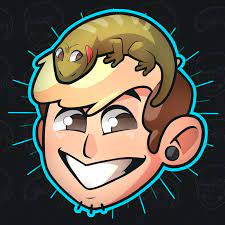

Das radionovelas até as antigas fitas VHS, o consumo de conteúdos através de streaming, vem aumentando no decorrer dos anos, venha conosco saber mais sobre uma das plataformas desse novo fenômeno. A História da Live Stream: Twitch.
Streaming é uma forma de distribuição de som e imagem, que é frequentemente utilizada para distribuir conteúdos através da internet, onde recebe e repassa as informações ao usuário de forma simultânea.
Desta forma, as informações não são armazenadas permanentemente pelo usuário em seu próprio computador (sem ocupar espaço no disco rígido).
Exemplos dessa tecnologia são as famosas plataformas Netflix, Youtube e Spotify.
Live Streaming é uma forma de transmissão de dados que ocorre ao vivo.
Funcionando dessa forma é necessário ressaltar que, a velocidade da internet é importante, pois interfere na qualidade de transmissão de imagem e som, tanto no transmissor quanto no receptor.
Diferente do streaming padrão, em que você pode dar pausa, retroceder ou avançar no conteúdo, perdas de conexão podem atrapalhar boa parte da experiência.
Em 2005 foi criada por Justin Kan, a plataforma de Live Streaming “justin.tv”, que tinha como visão ser um site voltado para pessoas que desejavam fazer lives de seu dia a dia, como reality shows sobre suas vidas.
Indo ao contrário de seu foco a plataforma cresceu inclinada a categoria de lives de jogos, sendo uma das pioneiras no ramo.
Então em 2011, foi renomeada para Twitch TV, um nome inusitado que em tradução livre é agitação ou estremecimento, uma alusão ao movimento de reação de quem joga.
A Twitch TV foi comprada pela Amazon pelo valor de US $970 milhões (R $3,7 bilhões em uma conversão direta) em agosto de 2014.
Dentro da Twitch TV atualmente existem inúmeros streamers e jogos, sendo League Of Legends, Counter Strike ( CS:GO), Free Fire e Fortnite os de maiores destaques.
Streamers Brasileiros e Seus Conteúdos |
||
|---|---|---|
| Foto Perfil | Conteúdo Focado | Quantidade de Followers |
| Campeonatos de CsGo e Just Chatting | 2,7 mi de followers | |
 | Jogos diversos | 4,8 mi de followers |
| Jogos com amigos e Just Chatting | 497,1 mil de followers | |
| Jogos com amigos e Just Chatting | 535,2 mil de followers | |
|  | Jogos com amigos e Just Chatting | 1,1 mi de followers |
https://kadernotech.com.br/a-historia-da-live-stream-twitch/
https://dicaappdodia.com/saiba-quem-sao-os-brasileiros-que-mais-se-destacam-na-twitch/